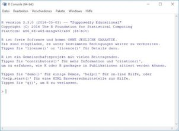
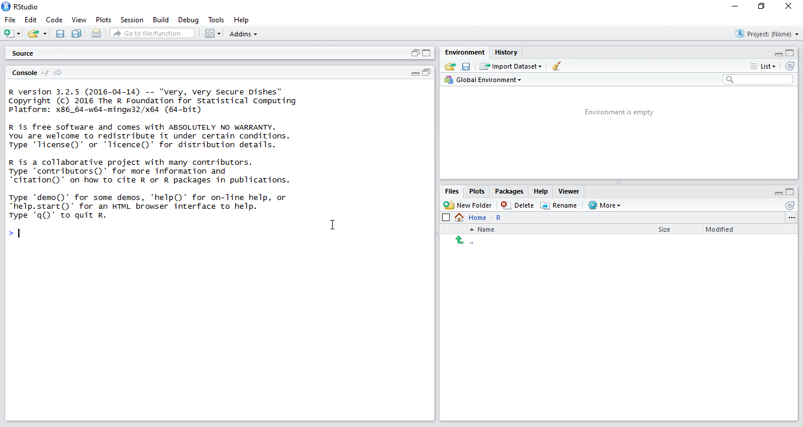

Kapitel 1 Rahmen
In diesem Skript geht es um die Praxis der Datenanalyse. Mit Rahmen ist das “Drumherum” oder der Kontext der eigentlichen Datenanalyse gemeint. Dazu gehören einige praktische Vorbereitungen und ein paar Überlegungen. Zum Beispiel brauchen wir einen Überblick über das Thema. Voila:
Datenanalyse, praktisch betrachtet, kann man in fünf Schritte einteilen (Wickham and Grolemund 2016). Zuerst muss man die Daten einlesen, die Daten also in R (oder einer anderen Software) verfügbar machen (laden). Fügen wir hinzu: In schöner Form verfügbar machen; man nennt dies auch tidy data1. Sobald die Daten in geeigneter Form in R geladen sind, folgt das Aufbereiten. Das beinhaltet Zusammenfassen, Umformen oder Anreichern je nach Bedarf. Ein nächster wesentlicher Schritt ist das Visualisieren der Daten. Ein Bild sagt bekanntlich mehr als viele Worte. Schließlich folgt das Modellieren oder das Hypothesen prüfen: Man überlegt sich, wie sich die Daten erklären lassen könnten. Zu beachten ist, dass diese drei Schritte - Aufbereiten, Visualisieren, Modellieren - keine starre Abfolge sind, sondern eher ein munteres Hin-und-Her-Springen, ein aufbauendes Abwechseln. Der letzte Schritt ist das Kommunizieren der Ergebnisse der Analyse - nicht der Daten. Niemand ist an Zahlenwüsten interessiert; es gilt, spannende Einblicke zu vermitteln.
Der Prozess der Datenanalyse vollzieht sich nicht im luftleeren Raum, sondern ist in einem Rahmen eingebettet. Dieser beinhaltet praktische Aspekte - wie Software, Datensätze - und grundsätzliche Überlegungen - wie Ziele und Grundannahmen.
1.1 Software
Als Haupt-Analysewerkzeug nutzen wir R; daneben wird uns die sog. “Entwicklungsumgebung” RStudio einiges an komfortabler Funktionalität bescheren. Eine Reihe von R-Paketen (“Packages”; d.h. Erweiterungen) werden wir auch nutzen. R ist eine recht alte Sprache; viele Neuerungen finden in Paketen Niederschlag, da der “harte Kern” von R lieber nicht so stark geändert wird. Stellen Sie sich vor: Seit 29 Jahren nutzen Sie eine Befehl, der Ihnen einen Mittelwert ausrechnet, sagen wir die mittlere Anzahl von Tassen Kaffee am Tag. Und auf einmal wird der Mittelwert anders berechnet?! Eine Welt stürzt ein! Naja, vielleicht nicht ganz so tragisch in dem Beispiel, aber grundsätzlich sind Änderungen in viel benutzen Befehlen potenziell problematisch. Das ist wohl ein Grund, warum sich am “R-Kern” nicht so viel ändert. Die Innovationen in R passieren in den Paketen. Und es gibt viele davon; als ich diese Zeilen schreibe, sind es fast schon 10.000! Genauer: 9937 nach dieser Quelle: https://cran.r-project.org/web/packages/.
1.1.1 R und RStudio installieren
Setzt natürlich voraus, dass R installiert ist. Sie können R unter https://cran.r-project.org herunterladen und installieren (für Windows, Mac oder Linux). RStudio finden Sie auf der gleichnamigen Homepage: https://www.rstudio.com; laden Sie die “Desktop-Version” für Ihr Betriebssystem herunter.
Die Oberfläche von R, die “Console”, sieht so aus:
 
Die Oberfläche von RStudio sieht (unter allen Betriebssystemen etwa gleich) so aus:

1.1.2 Hilfe! R tut nicht so wie ich das will
Manntje, Manntje, Timpe Te,
Buttje, Buttje inne See,
myne Fru de Ilsebill
will nich so, as ik wol will.
Gebrüder Grimm, Märchen vom Fischer und seiner Frau2
Ihr R startet nicht oder nicht richtig? Die drei wichtigsten Heilmittel sind:
- Schließen Sie die Augen für eine Minute. Denken Sie an etwas Schönes und was Rs Problem sein könnte.
- Schalten Sie den Rechner aus und probieren Sie es morgen noch einmal.
- Googeln.
Sorry für die schnottrigen Tipps. Aber: Es passiert allzu leicht, dass man Fehler wie diese macht:
install.packages(dplyr)install.packages("dliar")install.packages("derpyler")install.packages("dplyr") # dependencies vergessen- Keine Internet-Verbindung
library(dplyr) # ohne vorher zu installieren
Wenn R oder RStudio dann immer noch nicht starten oder nicht richtig laufen, probieren Sie dieses:
Sehen Sie eine Fehlermeldung, die von einem fehlenden Paket spricht (z.B. “Package ‘Rcpp’ not available”) oder davon spricht, dass ein Paket nicht installiert werden konnte (z.B. “Package ‘Rcpp’ could not be installed” oder “es gibt kein Paket namens ‘Rcpp’” oder “unable to move temporary installation XXX to YYY”), dann tun Sie folgendes:
- Schließen Sie R und starten Sie es neu.
- Installieren Sie das oder die angesprochenen Pakete mit
install.packages("name_des_pakets", dependencies = TRUE)oder mit dem entsprechenden Klick in RStudio. - Starten Sie das entsprechende Paket mit
library(paket_name).
Gerade bei Windows 10 scheinen die Schreibrechte für R (und damit RStudio oder RComannder) eingeschränkt zu sein. Ohne Schreibrechte kann R aber nicht die Pakete (“packages”) installieren, die Sie für bestimmte R-Funktionen benötigen. Daher schließen Sie R bzw. RStudio und suchen Sie das Icon von R oder wenn Sie RStudio verwenden von RStudio. Rechtsklicken Sie das Icon und wählen Sie “als Administrator ausführen”. Damit geben Sie dem Programm Schreibrechte. Jetzt können Sie etwaige fehlende Pakete installieren.
Ein weiterer Grund, warum R bzw. RStudio die Schreibrechte verwehrt werden könnnten (und damit die Installation von Paketen), ist ein Virenscanner. Der Virenscanner sagt, nicht ganz zu Unrecht: “Moment, einfach hier Software zu installieren, das geht nicht, zu gefährlich”. Grundsätzlich gut, in diesem Fall unnötig. Schließen Sie R/RStudio und schalten Sie dann den Virenscanner komplett (!) aus. Öffnen Sie dann R/RStudio wieder und versuchen Sie fehlende Pakete zu installieren.
Läuft der RCommander unter Mac nicht, dann prüfen Sie, ob Sie X11 (synonym: XQuartz) installiert haben. X11 muss installiert sein, damit der RCommander unter Mac läuft.
Die “app nap” Funktion beim Mac kann den RCommander empfindlich ausbremsen. Schalten Sie diese Funktion aus z.B. im RCommander über
Tools - Manage Mac OS X app nap for R.app.
1.1.3 Hier werden Sie geholfen
Es ist keine Schande, nicht alle Befehle der ca. 10,000 R-Pakete auswendig zu wissen. Schlauer ist, zu wissen, wo man Antworten findet. Hier eine Auswahl:
Zu diesen Paketen gibt es gute “Spickzettel” (cheatsheets): ggplot2, RMarkdown, dplyr, tidyr. Klicken Sie dazu in RStudio auf Help > Cheatsheets > … oder gehen Sie auf https://www.rstudio.com/resources/cheatsheets/.
In RStudio gibt es eine Reihe (viele) von Tastaturkürzlen (Shortcuts), die Sie hier finden: Tools > Keyboard Shortcuts Help.
Für jeden Befehl (d.i. Funktion) können Sie mit
?Hilfe erhalten; probieren Sie z.B.?mean.Im Internet finden sich zuhaus Tutorials.
Die bekannteste Seite, um Fragen rund um R zu diskutieren ist: http://stackoverflow.com.
1.1.4 Die Denk- und Gefühlswelt von R
Wenn Sie RStudio starten, startet R automatisch auch. Starten Sie daher, wenn Sie RStudio gestartet haben, nicht noch extra R. Damit hätten Sie sonst zwei Instanzen von R laufen, was zu Verwirrungen (bei R und beim Nutzer) führen kann.
Ein neues R-Skript im RStudio können Sie z.B. öffnen mit
File-New File-R Script.R-Skripte können Sie speichern (
File-Save) und öffnen.R-Skripte sind einfache Textdateien, die jeder Texteditor verarbeiten kann. Nur statt der Endung
txt, sind R-Skripte stolzer Träger der EndungR. Es bleibt aber eine schnöde Textdatei.Bei der Installation von Paketen mit
install.packages("name_des_pakets")sollte stets der Parameterdependencies = TRUEangefügt werden. Alsoinstall.packages("name_des_pakets", dependencies = TRUE). Hintergrund ist: Falls das zu installierende Paket seinerseits Pakete benötigt, die noch nicht installiert sind (gut möglich), dann werden diese sog. “dependencies” gleich mitinstalliert (wenn Siedependencies = TRUEsetzen).Hier finden Sie weitere Hinweise zur Installation des RCommanders: http://socserv.socsci.mcmaster.ca/jfox/Misc/Rcmdr/installation-notes.html.
Sie müssen online sein, um Packages zu installieren.
Die “app nap” Funktion beim Mac kann den RCommander empfindlich ausbremsen. Schalten Sie diese Funktion aus z.B. im RCommander über
Tools - Manage Mac OS X app nap for R.app.
Verwenden Sie möglichst die neueste Version von R, RStudio und Ihres Betriebssystems. Ältere Versionen führen u.U. zu Problemen; je älter, desto Problem… Updaten Sie Ihre Packages regelmäßig z.B. mit update.packages() oder dem Button “Update” bei RStudio (Reiter Packages).
R zu lernen kann hart sein. Ich weiß, wovon ich spreche. Wahrscheinlich eine spirituelle Prüfung in Geduld und Hartnäckigkeit… Tolle Gelegenheit, sich in diesen Tugenden zu trainieren :-)
1.1.5 Pakete installieren
Ein R-Paket, welches für die praktische Datenanalyse praktisch ist, heißt dplyr. Wir werden viel mit diesem Paket arbeiten. Bitte installieren Sie es schon einmal, sofern noch nicht geschehen:
install.packages("dplyr", dependencies = TRUE)Übrigens, das dependencies = TRUE sagt sinngemäß “Wenn das Funktionieren von dplyr noch von anderen Paketen abhängig ist (es also Abhängigkeiten (dependencies) gibt), dann installiere die gleich mal mit”.
Beim Installieren von R-Paketen könnten Sie gefragt werden, welchen “Mirror” Sie verwenden möchten. Das hat folgenden Hintergrund: R-Pakete sind in einer Art “App-Store”, mit Namen CRAN (Comprehense R Archive Network) gespeichert. Damit nicht ein armer, kleiner Server überlastet wird, wenn alle Studis dieser Welt just gerade beschließen, ein Paket herunterzuladen, gibt es viele Kopien dieses Servers - die “Mirrors”, Spiegelbilder. Suchen Sie sich einfach einen aus, der in der Nähe ist.
Nicht vergessen: Installieren muss man eine Software nur einmal; starten (laden) muss man sie jedes Mal, wenn man sie vorher geschlossen hat und wieder nutzen möchte:
library(dplyr)Der Befehl bedeutet sinngemäß: “Hey R, geh in die Bücherei (library) und hole das Buch (package) dplyr!”.
Wann benutzt man bei R Anführungszeichen? Das ist etwas verwirrend im Detail, aber die Grundegel lautet: wenn man Text anspricht. Im Beispiel oben “library(dplyr)” ist “dplyr” hier erst mal für R nichts Bekanntes, weil noch nicht geladen. Demnach müssten eigentlich Anführungsstriche stehen. Allerdings meinte ein Programmierer, dass es doch so bequemer ist. Hat er Recht. Aber bedenken Sie, dass es sich um die Ausnahme einer Regel handelt. Sie können also auch schreiben: library(“dplyr”) oder library(‘dplyr’); geht beides.
Das Installieren und Starten anderer Pakete läuft genauso ab. Am besten installieren Sie alle Pakete, die wir in diesem Buch benötigen auf einmal, dann haben Sie Ruhe.
1.1.6 R-Pakete für dieses Buch
In diesem Buch verwenden wir die folgenden R-Pakete; diese müssen installiert3 sein und geladen:
Pakete
#> [1] "tidyverse" "readr" "knitr" "stringr"
#> [5] "car" "nycflights13" "ISLR" "pdftools"
#> [9] "downloader" "ggdendro" "gridExtra" "tm"
#> [13] "tidytext" "lsa" "SnowballC" "wordcloud"
#> [17] "RColorBrewer" "okcupiddata" "reshape2" "wesanderson"
#> [21] "GGally" "titanic" "compute.es" "corrr"
#> [25] "rpart" "rpart.plot" "MASS" "titanic"
#> [29] "arules" "arulesViz" "SDMTools" "corrplot"
#> [33] "gplots" "corrplot" "scatterplot3d" "BaylorEdPsych"
#> [37] "nFactors"Anstelle alle einzeln zu laden (library verdaut nur ein Paket auf einmal), können wir mit etwas R-Judo alle auf einen Haps laden:
lapply(Pakete, require, character.only = TRUE)Der Befehl heißt auf Deutsch: “Wende auf jedes Element von Pakete den Befehl library an”4.
Hin und wieder ist es sinnvoll, die Pakete auf den neuesten Stand zu bringen; das geht mit update.packages().
1.1.7 Datensätze
| Name | Bezugsort | Quelle | Beschreibung |
|---|---|---|---|
profiles |
{okcupiddata} | (Kim and Escobedo-Land 2015) | Daten von einer Online-Singlebörse |
Wage |
{ISLR} | [James, Witten, Hastie, and Tibshirani (2013b) | Gehaltsdaten von US-amerikanischen Männern |
inf_test_short |
osf.io/sjhu | (Sauer 2017a) | Ergebnisse einer Statistikklausur |
flights |
{nycflights13} | (RITA 2013) | Abflüge von den New Yorker Flughäfen |
wo_men |
osf.io/ja9dw | (Sauer 2017b) | Größe von Studierenden |
tips |
{reshape2} | (Bryant and Smith 1995) | Trinkgelder in einem Restaurant |
extra |
osf.io/4kgzh | (Sauer 2016) U | mfrage zu Extraversion |
Wir verwenden zwei Methoden, um Datensätze in R zu laden.
- Zum einen laden wir Datensätze aus R-Paketen, z.B. aus dem Paket
okcupiddata. Dazu muss das entsprechende Paket installiert und geladen sein. Mit dem Befehldata(name_des_datensatzes, package = "name_des_paketes"), kann man dann die Daten laden. Das Laden eines Pakets lädt noch nicht die Daten des Paektes; dafür ist der Befehldatazuständig.
library(okcupiddata)
data(profiles, package = "okcupiddata")- Alternativ kann man die Daten als CSV- oder als XLS(X)-Datei importieren. Die Datei darf dabei sowohl auf einer Webseite als auch lokal (Festplatte, Stic…) liegen.
Daten <- read.csv("https://sebastiansauer.github.io/data/tips.csv")Wir werden mit beiden Methoden arbeiten und “on the job” Details besprechen.
1.2 ERRRstkontakt
Unser erster Kontakt mit R! Ein paar Anmerkungen vorweg:
- R unterscheidet zwischen Groß- und Kleinbuchstaben, d.h.
Omaundomasind zwei verschiedene Dinge für R! - R verwendet den Punkt
.als Dezimaltrennzeichen - Fehlende Werte werden in R durch
NAkodiert - Kommentare werden mit dem Rautezeichen
#eingeleitet; der Rest der Zeile von von R dann ignoriert. - R wendet Befehle direkt an
- R ist objektorientiert, d. h. dieselbe Funktion hat evtl. je nach Funktionsargument unterschiedliche Rückgabewerte
- Hilfe zu einem Befehl erhält man über ein vorgestelltes Fragezeichen
? - Zusätzliche Funktionalität kann über Zusatzpakete hinzugeladen werden. Diese müssen ggf. zunächst installiert werden
- Mit der Pfeiltaste nach oben können Sie einen vorherigen Befehl wieder aufrufen
- Sofern Sie das Skriptfenster verwenden: einzelne Befehle aus dem Skriptfenster in R Studio können Sie auch mit
StrundEnteran die Console schicken
1.2.1 R als Taschenrechner
Auch wenn Statistik nicht Mathe ist, so kann man mit R auch rechnen. Geben Sie zum Üben die Befehle in der R Konsole hinter der Eingabeaufforderung > ein und beenden Sie die Eingabe mit Return bzw. Enter.
4+2
#> [1] 6Das Ergebnis wird direkt angezeigt. Bei
x <- 4+2erscheint zunächst kein Ergebnis. Über <- wird der Variable x der Wert 4+2 zugewiesen. Wenn Sie jetzt
xeingeben, wird das Ergebnis
#> [1] 6angezeigt. Sie können jetzt auch mit x weiterrechnen.
x/4
#> [1] 1.5Vielleicht fragen Sie sich was die [1] vor dem Ergebnis bedeutet. R arbeitet vektororientiert, und die [1] zeigt an, dass es sich um das erste (und hier auch letzte) Element des Vektors handelt.
1.3 Was ist Statistik? Wozu ist sie gut?
Zwei Fragen bieten sich sich am Anfang der Beschäftigung mit jedem Thema an: Was ist die Essenz des Themas? Warum ist das Thema (oder die Beschäftigung damit) wichtig?
Was ist Stististik? Eine Antwort dazu ist, dass Statistik die Wissenschaft von Sammlung, Analyse, Interpretation und Kommunikation von Daten ist mithilfe mathematischer Verfahren ist und zur Entscheidungshilfe beitragen solle (The Oxford Dictionary of Statistical Terms 2006; Romeijn 2016). Damit hätten wir auch den Unterschied zur schnöden Datenanalyse (ein Teil der Statistik) herausgemeiselt. Statistik wird häufig in die zwei Gebiete deskriptive und inferierende Statistik eingeteilt. Erstere fasst viele Zahlen zusammen, so dass wir den Wald statt vieler Bäume sehen. Letztere verallgemeinert von den vorliegenden (sog. “Stichproben-”)Daten auf eine zugrunde liegende Grundmenge (Population). Dabei spielt die Wahrscheinlichkeitsrechnung und das Konzept von Zufallsvariablen eine große Rolle.
Dabei lässt sich der Begriff “Statistik” als Überbegriff von “Datenanalyse” verstehen, wenn diese Sicht auch nicht von allen geteilt wird (Grolemund and Wickham 2014). In diesem Buch steht die Aufbereitung, Analyse, Interpretation und Kommunikation von Daten im Vordergrund. Liegt der Schwerpunkt dieser Aktivitäten bei computerintensiven Methoden, so wird auch von Data Science gesprochen, wobei der Begriff nicht einheitlich verwendet wird (Wickham and Grolemund 2016; Hardin et al. 2015)
Aufgabe der deskriptiven Statistik ist es primär, Daten prägnant zusammenzufassen. Aufgabe der Inferenzstatistik ist es, zu prüfen, ob Daten einer Stichprobe auf eine Grundgesamtheit verallgemeinert werden können.
Daten kann man definieren als Informationen, die in einem Kontext stehen (Moore 1990), wobei eine numerische Konnotation mitschwingt.
1.4 Verweise
Chester Ismay erläutert einige Grundlagen von R und RStudio, die für Datenanalyse hilfreich sind: https://bookdown.org/chesterismay/rbasics/.
Roger Peng und Kollegen bieten hier einen Einstieg in Data Science mit R: https://bookdown.org/rdpeng/artofdatascience/
Wickam und Grolemund (2016) geben einen hervorragenden Überblick in das Thema dieses Buches; ihr Buch ist sehr zu empfehlen.
Wer einen stärker an der Statistik orientierten Zugang sucht, aber “mathematisch sanft” behandelt werden möchte, wird bei James et al. (2013b) glücklich oder zumindest fündig werden.
1.5 Versionshinweise
sessionInfo()
#> R version 3.3.2 (2016-10-31)
#> Platform: x86_64-apple-darwin13.4.0 (64-bit)
#> Running under: macOS Sierra 10.12.3
#>
#> locale:
#> [1] en_US.UTF-8/en_US.UTF-8/en_US.UTF-8/C/en_US.UTF-8/en_US.UTF-8
#>
#> attached base packages:
#> [1] grid methods stats graphics grDevices utils datasets
#> [8] base
#>
#> other attached packages:
#> [1] nFactors_2.3.3 lattice_0.20-34 boot_1.3-18
#> [4] psych_1.6.12 BaylorEdPsych_0.5 scatterplot3d_0.3-38
#> [7] gplots_3.0.1 corrplot_0.77 SDMTools_1.1-221
#> [10] arulesViz_1.2-0 arules_1.5-0 Matrix_1.2-8
#> [13] MASS_7.3-45 rpart.plot_2.1.0 rpart_4.1-10
#> [16] corrr_0.2.1 compute.es_0.2-4 titanic_0.1.0
#> [19] GGally_1.3.0 wesanderson_0.3.2 reshape2_1.4.2
#> [22] okcupiddata_0.1.0 wordcloud_2.5 RColorBrewer_1.1-2
#> [25] lsa_0.73.1 SnowballC_0.5.1 tidytext_0.1.2
#> [28] tm_0.6-2 NLP_0.1-9 gridExtra_2.2.1
#> [31] ggdendro_0.1-20 downloader_0.4 pdftools_1.0
#> [34] ISLR_1.0 nycflights13_0.2.2 car_2.1-4
#> [37] stringr_1.1.0 knitr_1.15.1 dplyr_0.5.0
#> [40] purrr_0.2.2.9000 readr_1.0.0 tidyr_0.6.1
#> [43] tibble_1.2 ggplot2_2.2.1.9000 tidyverse_1.1.1
#>
#> loaded via a namespace (and not attached):
#> [1] minqa_1.2.4 colorspace_1.3-2 class_7.3-14
#> [4] modeltools_0.2-21 mclust_5.2.2 rprojroot_1.2
#> [7] base64enc_0.1-3 MatrixModels_0.4-1 DT_0.2
#> [10] flexmix_2.3-13 mvtnorm_1.0-5 lubridate_1.6.0
#> [13] xml2_1.1.1 R.methodsS3_1.7.1 codetools_0.2-15
#> [16] splines_3.3.2 mnormt_1.5-5 robustbase_0.92-7
#> [19] jsonlite_1.2 nloptr_1.0.4 pbkrtest_0.4-6
#> [22] broom_0.4.1 kernlab_0.9-25 cluster_2.0.5
#> [25] R.oo_1.21.0 httr_1.2.1 backports_1.0.5
#> [28] assertthat_0.1 lazyeval_0.2.0.9000 htmltools_0.3.5
#> [31] quantreg_5.29 tools_3.3.2 gtable_0.2.0
#> [34] Rcpp_0.12.9 slam_0.1-40 trimcluster_0.1-2
#> [37] gdata_2.17.0 nlme_3.1-130 iterators_1.0.8
#> [40] fpc_2.1-10 lmtest_0.9-35 lme4_1.1-12
#> [43] rvest_0.3.2 gtools_3.5.0 dendextend_1.4.0
#> [46] DEoptimR_1.0-8 zoo_1.7-14 scales_0.4.1
#> [49] TSP_1.1-4 hms_0.3 parallel_3.3.2
#> [52] SparseM_1.74 yaml_2.1.14 reshape_0.8.6
#> [55] stringi_1.1.2 gclus_1.3.1 tokenizers_0.1.4
#> [58] foreach_1.4.3 seriation_1.2-1 caTools_1.17.1
#> [61] prabclus_2.2-6 bitops_1.0-6 evaluate_0.10
#> [64] htmlwidgets_0.8 plyr_1.8.4 magrittr_1.5
#> [67] bookdown_0.3 R6_2.2.0 DBI_0.5-1
#> [70] haven_1.0.0 whisker_0.3-2 foreign_0.8-67
#> [73] mgcv_1.8-16 nnet_7.3-12 janeaustenr_0.1.4
#> [76] modelr_0.1.0 KernSmooth_2.23-15 plotly_4.5.6
#> [79] rmarkdown_1.3 viridis_0.3.4 readxl_0.1.1
#> [82] forcats_0.2.0 vcd_1.4-3 digest_0.6.12
#> [85] diptest_0.75-7 R.utils_2.5.0 stats4_3.3.2
#> [88] munsell_0.4.3 viridisLite_0.1.3 registry_0.3Literaturverzeichnis
Wickham, Hadley, and Garrett Grolemund. 2016. R for Data Science: Visualize, Model, Transform, Tidy, and Import Data. O’Reilly Media. https://www.amazon.com/Data-Science-Visualize-Model-Transform/dp/1491910399%3FSubscriptionId%3D0JYN1NVW651KCA56C102%26tag%3Dtechkie-20%26linkCode%3Dxm2%26camp%3D2025%26creative%3D165953%26creativeASIN%3D1491910399.
Kim, Albert Y, and Adriana Escobedo-Land. 2015. “OkCupid Data for Introductory Statistics and Data Science Courses.” Journal of Statistics Education 23 (2). Citeseer: n2.
James, Gareth, Daniela Witten, Trevor Hastie, and Robert Tibshirani. 2013b. An Introduction to Statistical Learning. Vol. 6. Springer.
Sauer, Sebastian. 2017a. “Dataset ‘Predictors of Performance in Stats Test’.” Open Science Framework. doi:10.17605/OSF.IO/SJHUY.
RITA, Bureau of transportation statistics. 2013. “Nycflights13.” http://www.transtats.bts.gov/DL{\_}SelectFields.asp?Table{\_}ID=236.
Sauer, Sebastian. 2017b. “Dataset ‘Height and Shoe Size’.” Open Science Framework. doi:10.17605/OSF.IO/JA9DW.
Bryant, PG, and MA Smith. 1995. “Practical Data Analysis: Case Studies in Business Statistics, Homewood, Il: Richard d.” Irwin Publishing.
Sauer, Sebastian. 2016. “Extraversion Dataset.” Open Science Framework. doi:10.17605/OSF.IO/4KGZH.
The Oxford Dictionary of Statistical Terms. 2006. Oxford University Press. https://www.amazon.com/Oxford-Dictionary-Statistical-Terms/dp/0199206139%3FSubscriptionId%3D0JYN1NVW651KCA56C102%26tag%3Dtechkie-20%26linkCode%3Dxm2%26camp%3D2025%26creative%3D165953%26creativeASIN%3D0199206139.
Romeijn, Jan-Willem. 2016. “Philosophy of Statistics.” In The Stanford Encyclopedia of Philosophy, edited by Edward N. Zalta, Winter 2016. http://plato.stanford.edu/archives/win2016/entries/statistics/.
Grolemund, Garrett, and Hadley Wickham. 2014. “A Cognitive Interpretation of Data Analysis.” International Statistical Review 82 (2). Wiley Online Library: 184–204.
Hardin, Johanna, Roger Hoerl, Nicholas J Horton, Deborah Nolan, Ben Baumer, Olaf Hall-Holt, Paul Murrell, et al. 2015. “Data Science in Statistics Curricula: Preparing Students to ‘Think with Data’.” The American Statistician 69 (4). Taylor & Francis: 343–53.
Moore, David S. 1990. “Uncertainty.” On the Shoulders of Giants: New Approaches to Numeracy. ERIC, 95–137.